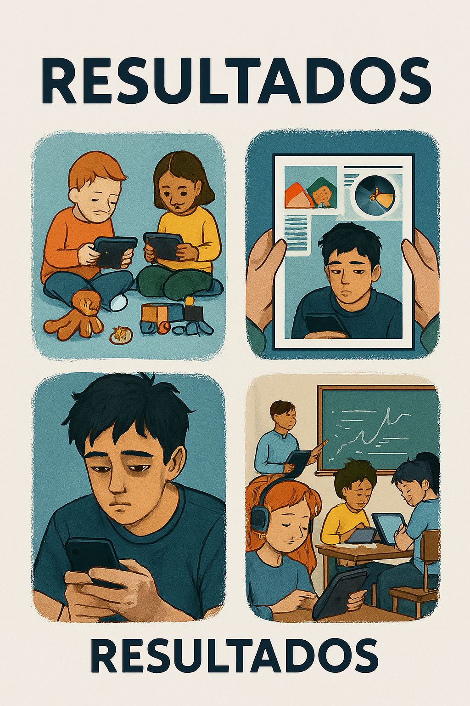
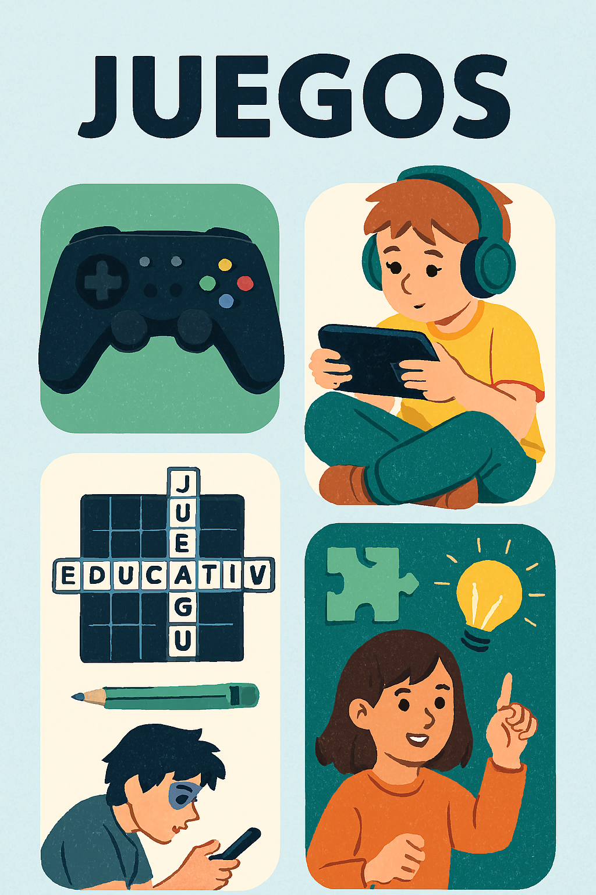

Bienvenido a nuestra revista digital
Explora cómo el uso excesivo de la tecnología afecta el rendimiento académico y la vida cotidiana de los estudiantes. Este proyecto fue desarrollado por 1ero de Bachillerato como parte de una investigación educativa interdisciplinaria.
Explora nuestras secciones

Revista
Investigación

Resultados

Juegos
“El 68% de los estudiantes reconoce que el uso excesivo del celular afecta su concentración en clase.”